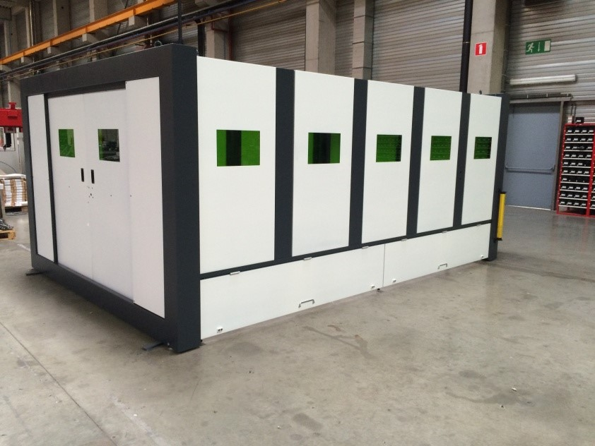

Для резки листовых заготовок, труб, профилей, а так же обьемных деталей
Лазерная резка
На сегодняшний день является одним из самых востребованных способов разделения (резания) заготовок из различных материалов, таких как - конструкционные стали, аллюминий, нержавеющая сталь, медь, латунь, титан, а так же неметаллы - дерево, кожа, и т.д. Наша компания является официальном диллером Бельгийской компании Balliu - одного из лидеров в области производства установок лазерной резки. Производственная линейка Balliu включает в себя следующие модели машин:
- BA, Rabbit – машины для обработки листа
- LM – машины для обработки листа с возможностью обработки трубы а также для обработки проката большой длины (от 12 метров и более)
- SLF, LPC, LTC – машины для обработки трубы и профиля
- Minicut – машины для высокоточной обработки заготовок малого размера
- Minotaur и Megacut – машины для 5-ти и более осевой обработки листа 3D заготовок, резки и сварки
- LCF – машины для наплавки 2D и 3D деталей
- Система ЧПУ и линейные моторы Siemens
- Лазерный источник Rofin-Sinar
- Режущая головка Presitec
- Система охлаждения Hyfra Pedia
- Фильтровентиляционная система Donaldson Torit
- Щелевые источники CO2 компании Rofin-Sinar отличаются самым высоким качеством луча в своем классе К≥0,95, с параметром ТЕМ 00, что позволяет достигать самой высокой плотности мощности луча и, как следствие, более высокой производительности всего комплекса в целом. Отсутствие турбины, большого количества отражающей оптики, а так же встроенной premix баллон с лазерным газом сводит к минимуму сервисные затраты, приравнивая их к сервисным затратам по обслуживанию оптико-волоконных источников
- Оптико-волоконные источники Rofin-Sinar могут поставляться с блоками FFC, позволяющим быстро подключить волокно к источнику без выпаивания, и блоком FFS, позволяющим подключать к одному источнику до 4-х волокон
- Линейные приводы обеспечивают максимальные скорости перемещений, высокую динамику и при этом точность позиционирования 0,005 мм с практически полным отсутствием люфта при смене направлений. К тому же данный вид привода вообще не требует обслуживания, т.к. перемещение портала на магнитной подушке исключает механический износ компонентов
- Прочная рама, частично заполненная полимерным бетоном, что делает ее вдвое тверже, чем, если бы она была изготовлена только из металла – тем самым достигается очень стабильная безвибрационная конструкция
- Гибкость в конструировании лазерного комплекса (по желанию клиента возможна зеркальная конструкция, смена паллет с любой стороны, подгонка под планировку цеха клиента и т.д.)
- Гибкость в установке (резонатор CO2 может быть расположен параллельно или перпендикулярно к раме машины (экономия площади), другие компоненты также могут быть нестандартно расставлены по желанию клиента)

Установки лазерной резки Balliu серии BA
BA - это бюджетная машина лазерной резки для компаний, которые переключаются с трудоемкого аутсорсинга на собственное производство. Для них точность и гибкость резки важнее, чем большой объем производства. Стандартная машина имеет размеры рабочей зоны - 1500 х 3000 мм.

Установка лазерной резки труб Balliu серии SLF
Быстрые, мощные станки для обработки труб и различных типов профилей

Установки лазерной резки Balliu серии Rabbit
Высокоскоростная установка лазерной резки, оснащенная линейными приводами, порталом сделанным из кевлара - это позволяет достигать ускорений 35 м/с², и скорости в 310 м/мин.
Специальные станки изготовленные на заказ
Компания Balliu так же изготавливает специальные станки на заказ. Что это значит? - Допустим Вам необходим станок с рабочей зоной 450х450 мм и мощностью источника 500 Ватт - мы с радостью поможем Вам!